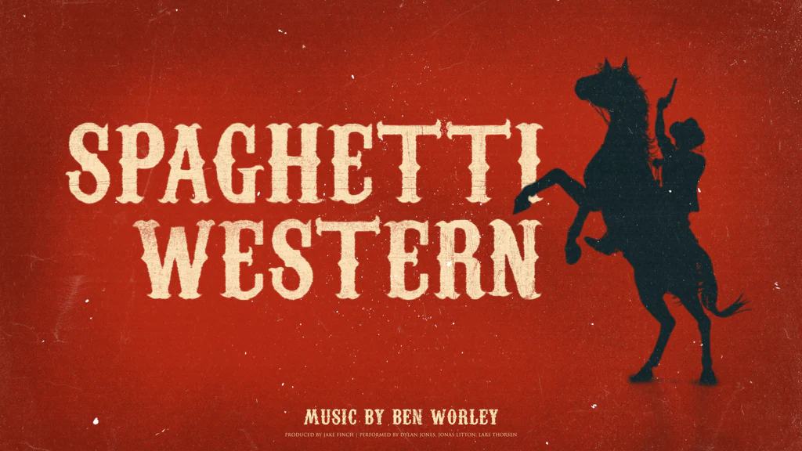

Spaghetti Western Genre
The Spaghetti Western is a sub-genre of Western films that emerged in the mid-1960s, primarily produced and directed by Italians. These films are characterized by their gritty realism, moral ambiguity, and stylistic visuals, often featuring anti-heroes, stark landscapes, and sweeping musical scores. Named for the Italian origin of many of these films, Spaghetti Westerns often diverge from the traditional American Western, focusing more on violence, complex characters, and operatic storytelling. The genre reached its peak in the 1960s and 1970s, with directors like Sergio Leone and composers like Ennio Morricone becoming synonymous with the style.
The Dollars Trilogy

The Dollars Trilogy, also known as the Man with No Name Trilogy, is a seminal series of Spaghetti Western films directed by Sergio Leone and starring Clint Eastwood. The trilogy consists of "A Fistful of Dollars" (1964), "For a Few Dollars More" (1965), and "The Good, the Bad and the Ugly" (1966). These films are renowned for their innovative approach to the Western genre, featuring a blend of stylized violence, intricate plots, and memorable music by Ennio Morricone. The trilogy not only catapulted Clint Eastwood to stardom but also redefined the Western film genre, influencing countless filmmakers and becoming a cornerstone of cinematic history.
The Glimpse of the Western World
I have edited a glimpse video, similar to a trailer, with cuts of scenes from the Dollars Trilogy set to the prelude of the song "Oruvan Oruvan" from the movie "Muthu" (1995), composed by A. R. Rahman as the background music. I hope you enjoy my edit 😁😉.